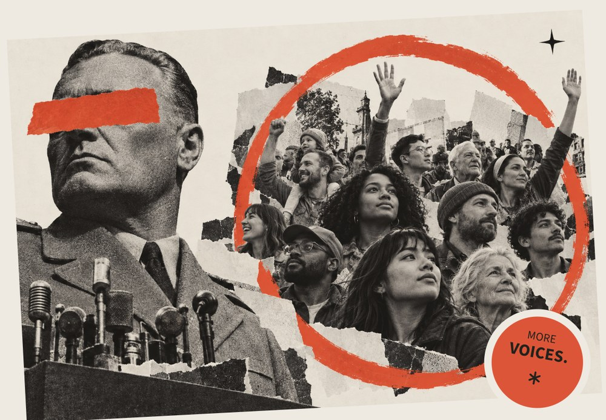

— ZK-VERIFIED PEOPLE · ENCRYPTED BALLOTS · CHECKABLE COUNTS
Give it a conversation.
Real people. Encrypted ballots. A count you can question. VenekoVox is a place to disagree — and still be heard.

FIGURE 01 — FROM ONE VOICE → TO MANY · REDACTION: CENSORSHIP / THE REGIME CANNOT SEE YOU
FLAGSHIP POLL · AI & SOCIETY · LIVE ON SEPOLIA
Do you support a global ban on developing artificial superintelligence?
US, Canada, Australia & EU citizens · 18+. Three options, equal weight. Encrypted until the verified tally. Real poll — the same one a judge can vote on right now.
— THE PUBLIC SQUARE IS BROKEN
Three ways honest voices go unheard.
State retaliation & rigged numbers
Dissent carries risk — the job, the aid, the safety. Regimes publish the numbers they want. Real sentiment drops below 10%, and nobody can prove it.
“The ballot that counts against the regime.”
but I'd rather not say.
voice #2,741 stays silent
Cancel culture & the silent majority
Peer pressure is its own censor. Millions self-censor to keep their jobs, their friends, their standing — and the extremes speak loudest.
“Fear turns the majority into spectators.”
AI swarms & broken polling
Phone polls miss the truth every cycle. Feeds are flooded with AI personas and paid astroturf. Nobody knows what the neighbor actually believes.
“Manufactured consensus replaces ground truth.”
— HOW A VOTE TRAVELS
Four steps. Zero exposure.
The whole pipeline runs on open, inspectable cryptography. Here is exactly what happens between your passport and the published count.
Prove you're one person
Scan your passport once. A zero-knowledge proof is generated in your browser — the system sees “unique adult, eligible”, nothing else. No name, number, or face ever leaves the device.
Encrypt your ballot
The vote is encrypted before it touches the network, under MACI. Coercers cannot see, buy, or force your choice — you yourself cannot prove how you voted.
Emit & seal
Your encrypted message is posted on-chain. Nobody can tie it to you. The system answers: “yes, this is a ballot” — never “this ballot is Ana's”.
Count with evidence
When the poll closes, the tally runs and publishes a zero-knowledge proof of the count. Anyone can verify the math without seeing a single ballot.
Why “can't prove how you voted” mattersIf you cannot prove your vote to a buyer or a threat, vote-selling and coercion become mathematically impossible — even under duress. This is MACI's anti-collusion property.
— TRUST WITHOUT THE VERBAL CONTRACT
What the system sees.
We don't ask for trust. The architecture publishes what it can know — and proves what it cannot.
— UNDER THE HOOD
Open source. Inspectable.
ZERO-KNOWLEDGE PASS
Proof in, nothing out
Self Protocol + ZKPassport generate the eligibility proof in-browser. The verifier contract checks the math — it never sees the document.
ENCRYPTED BALLOT LAYER
MACI, the anti-coercion rail
Vote commands are encrypted to the coordinator, messages are shuffled, and users can rotate keys to undo a coerced vote. Built by PSE / Ethereum Foundation research.
Which parts are on-chain vs. metadata?The poll question text and options are operator metadata (indexed by The Graph). The vote commands, state roots, and tally proof are on-chain. The honest distinction is part of the product.
A global ban without a verification mechanism will be unenforceable — this is exactly the kind of question that needs real, anonymous evidence of public sentiment.